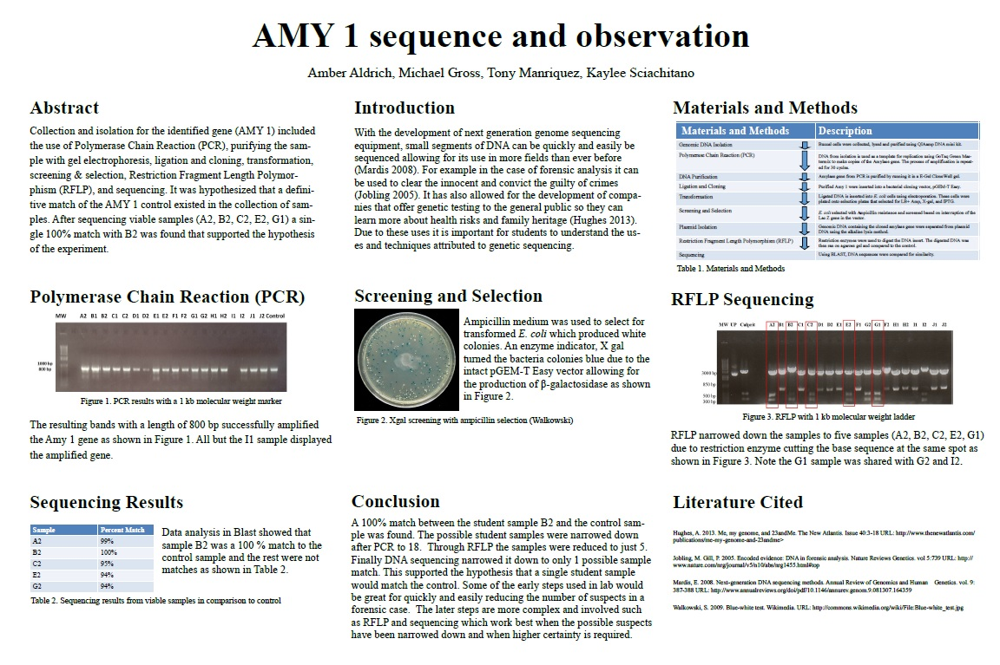

Aldrich
AldrichUsing the skills we learned in the microbiology lab we were to collect microbe samples from places of our choice. We then identified the genus and species of two different bacteria.
The first sample was taken from a rusty bolt located in my apartment fairy garden using a sterile swab and water. I then streaked for isolation several times, growing it at room temp ~25 degrees C. I started by doing a gram stain, which showed that I had gram positive staph cocci. I then performed the following tests:
The second sample was taken from my apartment microwave using a sterile swab and water. I streaked this for isolation several times and grew it at 37 degrees Celsius. I did a gram stain on and had gram positive cocci. I then performed the following tests:
I concluded that using the Bergy’s manual as a guide that my sample was Micrococcus kristinae.
The yeast experiment was a presentation for my genetics lab, reporting my results of the effects of lipid production in yeast with the over expression of the UBC8 gene for bio-renewable applications.
The CySi poster was a project in my genetics lab, with the purpose of identifying whose DNA was the unknown sample.
The CySi poster was a project in my genetics lab, with the purpose of identifying whose DNA was the unknown sample. First, cells were taken from each student in the class and the DNA was extracted, followed by PCR for a larger sample of the Amy 1 gene. The possible students were narrowed down by screening and selection, RFLP sequencing and finally DNA sequencing which showed student B2 was the match to the unknown sample.